Data Science for Electron Microscopy
Week 8: Small data: augmentation, transfer & self-supervision
FAU Erlangen-Nürnberg
Institute of Micro- and Nanostructure Research
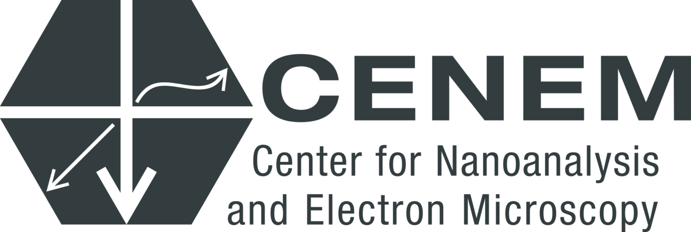
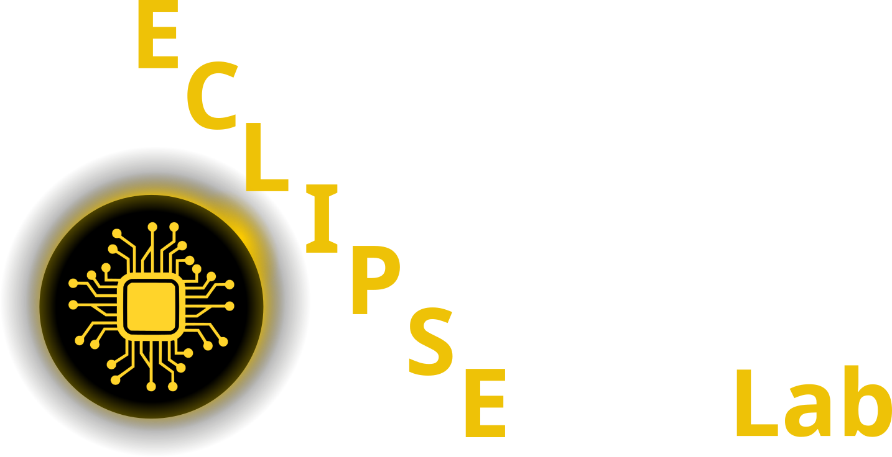
Recap: Week 7 and today’s question
- Week 7: CNNs & U-Nets — convolution, VGG → ResNet, U-Net segmentation (IoU/Dice), Grad-CAM and the shortcut-learning demo.
- A trained CNN is a hierarchical feature extractor: the part before the head is a reusable backbone.
- The uncomfortable reality: our U-Net needed hundreds of labels and still missed faint particles and fired on an unseen scratch.
- Today’s question: 30 labelled TEM frames, thousands of unlabelled ones — how do you train a model that generalises?
Road map and self-study
Road map (≈90 min)
- The small-data reality in EM (3 slides)
- Physics-respecting augmentation (5)
- Transfer learning & catastrophic forgetting (3)
- Synthetic data & the sim-to-real gap (3)
- Self-supervised learning: SimCLR, MAE, DINO (9)
- Foundation models: SAM, μSAM (3)
- Using embeddings: probe vs fine-tune, retrieval (3)
- Active learning & the full workflow (2)
Self-study: notebooks/week08_embeddings_transfer.ipynb
- sim-supervised vs SimCLR backbone (CPU, no labels)
- PCA maps + kNN retrieval, precision@k
- scratch vs linear probe vs LP→fine-tune vs #labels

Learning outcomes
By the end of today you can …
- Explain why labelled EM data is scarce and how shortcut learning shows up at \(N\approx 50\).
- Design an augmentation pipeline justified by physical symmetries — and reject illegal transforms.
- Choose feature extraction, fine-tuning (differential LRs, LP→FT) or training from scratch.
- Describe SimCLR, MAE and DINO, and how each avoids representation collapse.
- Evaluate an embedding with a linear probe, kNN retrieval and specimen-grouped validation.
- Assemble these pieces and active learning into one small-data workflow.
The labelled-data gap: a three-order-of-magnitude problem
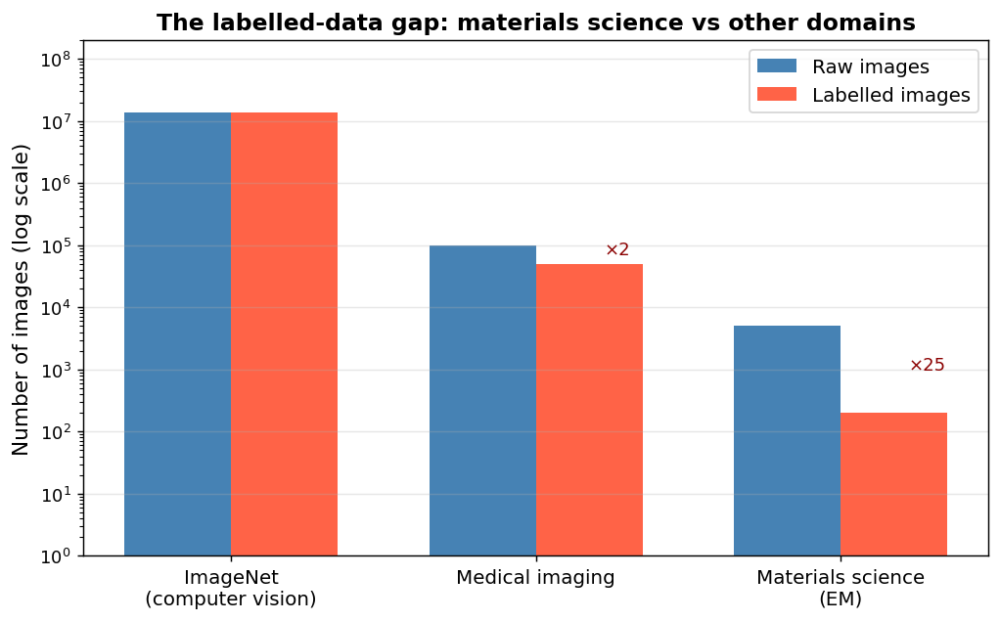
Labelled images per domain: ImageNet 14 M (crowdsourced, seconds each), medical imaging ~10⁴ (radiologists), materials EM 50–500 (hours of expert time each) Holm, Elizabeth A. et al., (2020); Sandfeld, Stefan et al., (2024).
Overfitting at \(N\approx 50\): the model learns shortcuts
- ResNet-50 on 50 images: ~500 000 parameters per image — enough to fit any labelling, including noise.
- What it memorises instead of microstructure: detector vignetting, session contrast, the scale-bar corner.
- Symptom: a train–val gap (99 % train, 55 % test), not a high training loss.
- Diagnose: Grad-CAM (Week 7) lighting up corners or the scale bar; specimen-grouped validation.
- Hygiene rule: split by specimen first, then augment — the training set only.
The small-data survival kit: four strategies
- Augmentation: physically plausible transforms multiply the effective training set.
- Transfer learning: start from a pretrained backbone (ImageNet); adapt only the last layers.
- Synthetic data: simulate images from known structures — perfect labels at zero annotation cost.
- Self-supervised pretraining / foundation models: learn from unlabelled in-domain images, or start from DINOv2 / SAM.
- They stack: pretrained backbone → augmentation throughout → fine-tune on few real labels.
Augmentation: encoding physical invariances
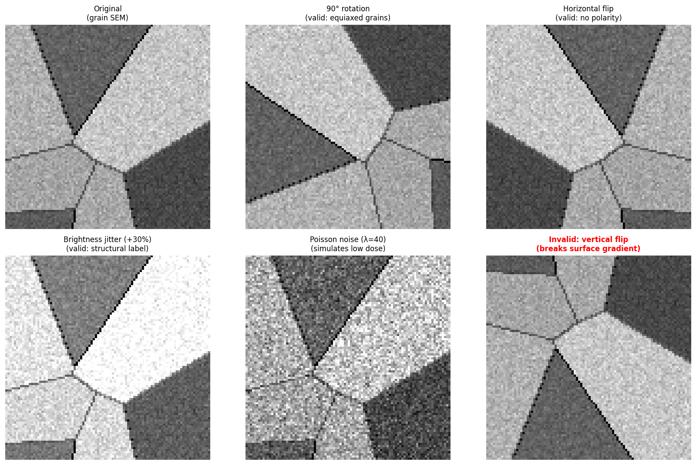
Six views of the SAME synthetic grain layout: original, 90° rotation, horizontal flip, brightness jitter, Poisson noise (all valid for equiaxed grains) and vertical flip (invalid if a surface gradient exists).
Every augmentation is a claim that the physics has that symmetry.
What each transform encodes — and when it is illegal
| Transform | Physical claim / simulates | Illegal when … |
|---|---|---|
| Flip | mirror symmetry | feature has polarity (weld cap vs root, DS column) |
| Rotation | rotational symmetry | orientation is the signal (columnar grains, EBSD) |
| Crop / zoom | translation / scale invariance | grain size or lattice spacing is the label |
| Elastic warp | drift, sample warping | metric labels (size, aspect ratio) |
| Brightness / gamma | session / detector variation | intensity is quantitative (EELS, Z-contrast) |
| Poisson noise, blur | low dose, defocus, drift | rarely — the physically correct noise model |
| Scratches, contamination | preparation artefacts | artefact is the target |
Physically-invalid augmentations: the materials gate
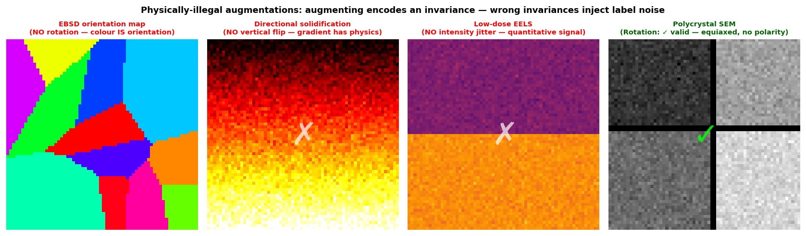
Illegal augmentations: rotating an EBSD/IPF map (colour encodes orientation), vertically flipping directional solidification (the thermal gradient is real), intensity jitter on an EELS map (intensity encodes composition). An equiaxed polycrystal allows all of them.
Augmentation scenario: a laser-welded joint
- Scenario: 50 SEM images of a laser-welded joint, bead running left-to-right. Task: classify weld quality (good/defective).
- Horizontal flip: valid — the weld is approximately mirror-symmetric about its centreline.
- Vertical flip: invalid — top surface (cap bead, undercut) ≠ root (penetration, lack of fusion).
- 90° rotation: invalid — bead direction is physically defined (travel direction, gravity during solidification).
- Brightness jitter, Gaussian noise: valid — quality is a structural judgement, not an absolute-intensity measurement.
- The meta-point: every verdict came from physics, not from a CV default.
Implementation: joint transforms, on the fly, after the split
- Label consistency: image and mask get the same sampled transform. Two separate calls → misaligned masks, IoU plateaus.
- On the fly: a new random transform every batch — the network never sees the same pixels twice.
- Split by specimen first, then augment the training set only.
Why ImageNet features transfer to EM images
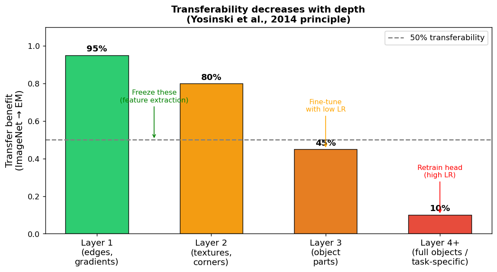
Transferability vs CNN depth Yosinski, Jason et al., (2014): edges/gradients (layer 1) transfer almost fully, textures mostly, object parts and task-specific layers barely.
- Domain gap: EM is 1-channel, 16-bit, Poisson noise, periodic textures. Replicate grey → 3 channels; do not re-initialise the first conv layer.
Backbone + new head: feature extraction or fine-tuning?
| Few labels (<100) | More labels (100–1 000) | |
|---|---|---|
| Small domain gap (optical ↔︎ photos) | Feature extraction (frozen backbone) | Fine-tuning, differential LRs |
| Large domain gap (photos ↔︎ HAADF) | Feature extraction + BN adaptation | Fine-tuning + gradual unfreezing |
- Keep the backbone, replace the head — the 1000-class ImageNet head is discarded, never “fine-tuned”.
- BatchNorm trap: a frozen backbone in
eval()uses ImageNet statistics → mis-normalised micrographs.
Catastrophic forgetting and differential learning rates
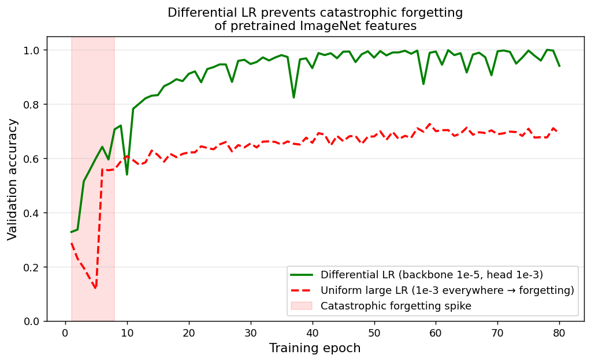
Fine-tuning with one large LR (red) destroys pretrained features in the first epochs; differential LRs (green) climb steadily.
- A random head sends large random gradients into the pretrained backbone and overwrites it.
- Fix: \(\eta_\text{backbone}\approx 10^{-5}\ll\eta_\text{head}\approx 10^{-3}\); unfreeze gradually top-down; or LP→FT.
Synthetic data: free perfect labels by construction
- Flip the arrow: choose the label (structure) → render the image. The label is perfect by construction.
- Voronoi grains, phase field, multislice TEM Rakowski, Aaron et al., (2024): 10 000 images in minutes.
- Caution: it fails on whatever the generator omits — Voronoi makes no twins.
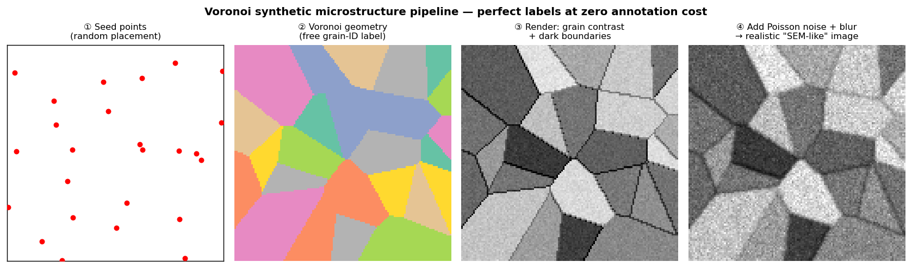
Purely synthetic can beat real-trained: Construction Zone
U-Net trained only on simulated HRTEM, tested on real nanoparticles Rakowski, Aaron et al., (2024):
| Benchmark | Synthetic F1 | Prev. best (real) |
|---|---|---|
| Au, 5 nm | 0.92 | 0.89 |
| Au, 2.2 nm | 0.86 | 0.75 |
| CdSe, 2 nm | 0.75 | 0.59 |
Simulate the right variation, not more structures.
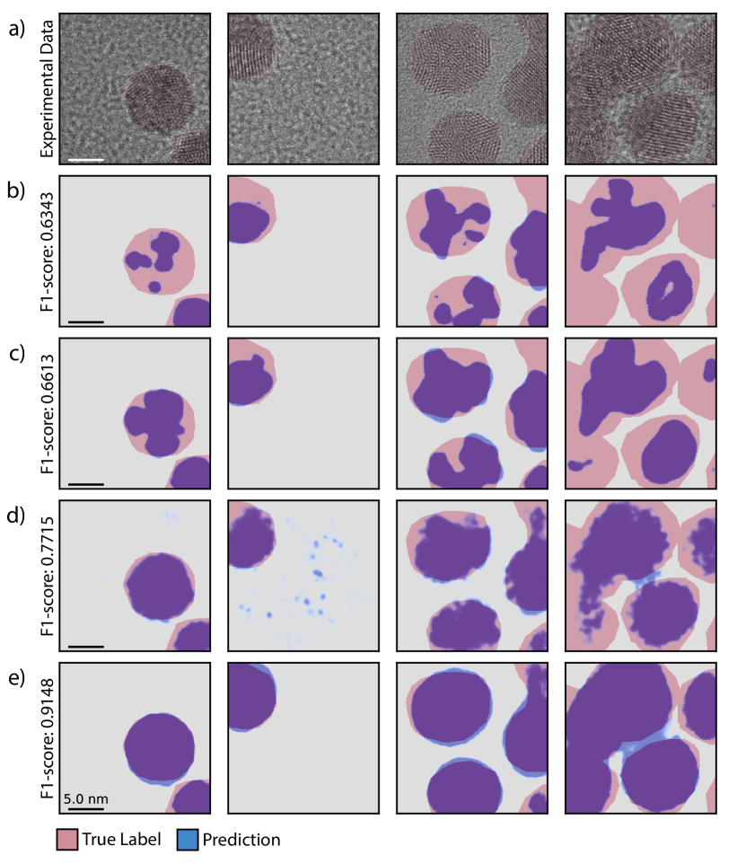
When synthetic transfers — and closing the sim-to-real gap
- It transfers when the generator captures the task-relevant invariant (grain topology: continuous boundaries, ~120° junctions) and spans the nuisance distribution (dose, defocus, aberrations).
- It fails on what the generator omits: twins, charging streaks, sub-grain contrast.
- Close the gap, boring solutions first:
- measured noise model (Poisson gain, readout σ) in the renderer
- augmentation in the rendering pipeline
- fine-tune on 10–20 real labels
- only then CycleGAN / adversarial domain adaptation
The unlabelled mountain: learning without labels
- Asymmetry: a 4D-STEM scan has \(10^5\)–\(10^6\) patterns; CEM500k holds ~500 000 unlabelled EM images Conrad, Ryan et al., (2021).
- Self-supervised learning (SSL): a pretext task whose labels come from the data itself trains a backbone; reuse it downstream.
- Goal: an embedding \(\mathbf{h}=f_\theta(\mathbf{x})\) where physically similar micrographs are close — so a few labels suffice.
- vs ImageNet transfer: SSL pretrains in-domain — your detector, noise and contrast.
Three families of self-supervised learning
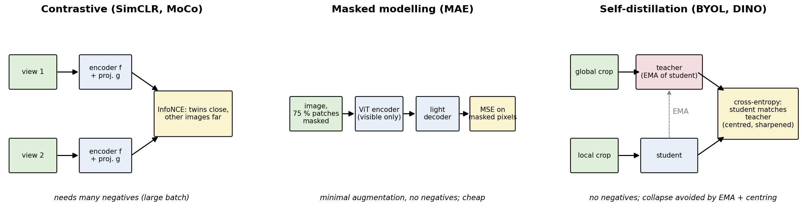
Contrastive: pull two views together, push other images apart. Masked modelling: hide patches, reconstruct them. Self-distillation: a student matches an EMA teacher across crops, no negatives.
Common enemy: representation collapse — every input mapped to the same vector.
Contrastive learning: SimCLR
- Batch of \(N\) micrographs, two random augmentations each → \(2N\) views.
- Encoder \(f\) → \(\mathbf{h}\); projector MLP \(g\) → \(\mathbf{z}=g(\mathbf{h})\).
- For view \(i\), its twin \(j\) is the positive; the other \(2N-2\) are negatives.
- Minimise NT-Xent (InfoNCE); then discard \(g\), keep \(f\).
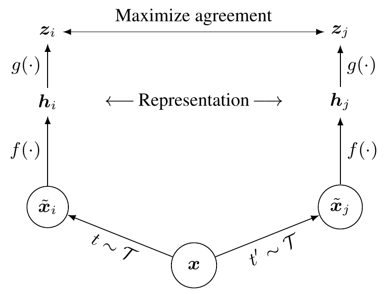
The InfoNCE / NT-Xent loss
For a positive pair \((i,j)\) among \(2N\) views, cosine similarity \(\mathrm{sim}(\mathbf{u},\mathbf{v})=\mathbf{u}^\top\mathbf{v}/(\|\mathbf{u}\|\|\mathbf{v}\|)\), temperature \(\tau\):
\[ \ell_{i,j} = -\log \frac{\exp\!\big(\mathrm{sim}(\mathbf{z}_i,\mathbf{z}_j)/\tau\big)}{\sum_{k\neq i}\exp\!\big(\mathrm{sim}(\mathbf{z}_i,\mathbf{z}_k)/\tau\big)} \]
- A \((2N-1)\)-way softmax classification whose “correct class” is the twin.
- Chance level \(\log(2N-1)\) (≈ 5.5 for \(N=128\)) — a sanity line on the training curve.
- Temperature \(\tau\) (0.1–0.5): small \(\tau\) focuses on the hardest negatives.
- Negatives prevent collapse: identical \(\mathbf{z}\) keep the loss at chance.
Augmentations are the labels: the physics gate returns
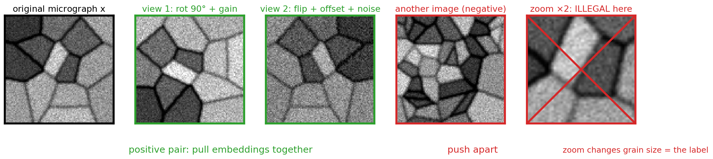
Rotation + gain and flip + offset + noise give a valid positive pair (green); another micrograph is a negative. A ×2 zoom is illegal when grain size is the target.
- The embedding becomes invariant to exactly the augmentations you use. Natural-image defaults (random-resized crop, colour jitter) are often wrong for EM.
Masked image modelling: MAE
- Mask ~75 % of patches, encode the visible 25 % with a ViT, reconstruct the rest; MSE on masked patches He, Kaiming et al., (2022).
- High ratio → the model must learn structure, not interpolate.
- No negatives, minimal augmentation; encoder skips masked tokens (cheap).
- Frozen features weaker; MAE shines after fine-tuning.
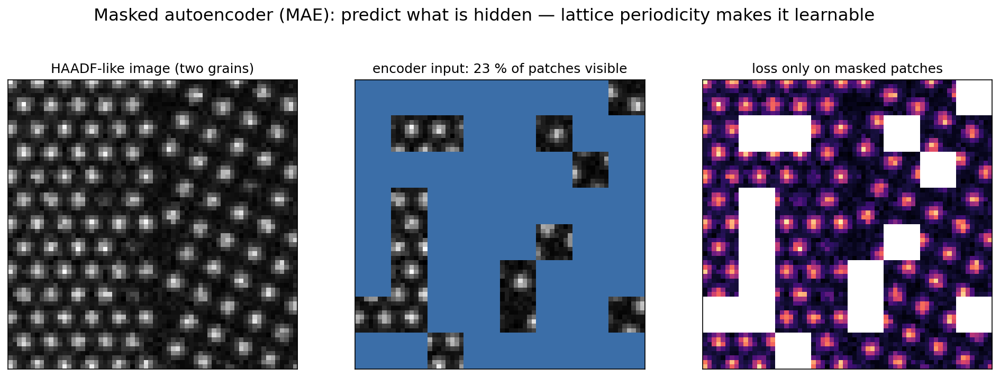
Self-distillation: DINO and DINOv2
- Student–teacher: different crops (global + local); the student matches the teacher’s output distribution Caron, Mathilde et al., (2021).
- Teacher = EMA of the student — no gradients, a stable target (from BYOL Grill, Jean-Bastien et al., (2020)).
- No negatives: collapse avoided by centring and sharpening of teacher outputs.
- DINOv2 Oquab, Maxime et al., (2023): + masked-token objective, 142 M curated images. Frozen DINOv2 + linear probe = strongest generic baseline.
SimCLR vs MAE vs DINO — what to use for EM?
| SimCLR | MAE | DINO / DINOv2 | |
|---|---|---|---|
| Signal | twin among negatives | reconstruct hidden patches | match EMA teacher |
| Collapse prevention | negatives | reconstruction target | EMA + centring + sharpening |
| Augmentation design | critical | minimal | important (multi-crop) |
| Frozen features | good | weaker | best |
| After fine-tuning | good | very good | very good |
Self-supervised pretraining on EM data
- Kazimi et al. 2024 Kazimi, Bashir et al., (2024): pretrain on unlabelled CEM500k, fine-tune for segmentation, denoising, super-resolution.
- Smaller pretrained models beat larger random-init ones; biggest gains with few labels.
- Take-away: pretrain on the unlabelled mountain you already have.
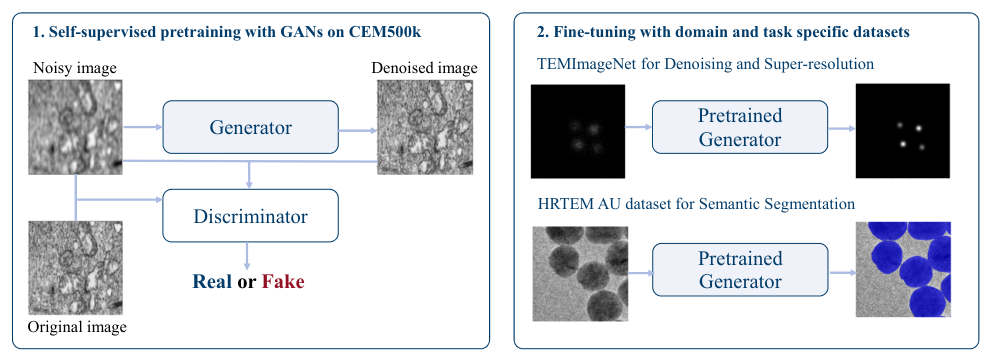
Foundation models: pretrain once, adapt everywhere
- Definition: a large model pretrained on broad data, adapted by prompting, probing or fine-tuning — DINOv2, CLIP Radford, Alec et al., (2021), SAM.
- Adaptation ladder: zero-shot / prompt → frozen features + probe / kNN → fine-tune last blocks → full fine-tune.
- For EM: natural-image models know edges, not diffraction physics — zero-shot is often mediocre; light in-domain fine-tuning closes most of the gap.
Segment Anything (SAM): promptable segmentation
- SAM Kirillov, Alexander et al., (2023): heavy ViT encoder (once per image) + prompt encoder + light mask decoder (per click, milliseconds).
- Promptable: click a particle or box a grain → mask; trained on 11 M images, 1.1 B masks.
- Zero-shot on EM: fine for particles and voids; weak on thin boundaries, low-dose noise, lattices.
- Real value: an annotation accelerator — clicks instead of polygons, then train your own small model.
μSAM: Segment Anything for Microscopy
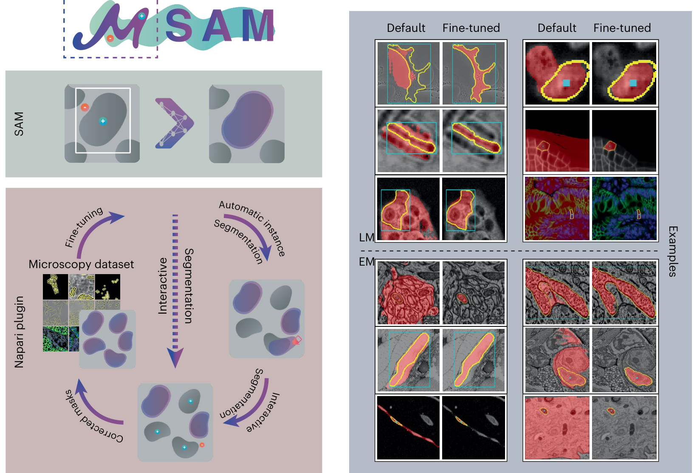
μSAM: napari plugin for interactive and automatic segmentation, correction and fine-tuning; default vs microscopy-fine-tuned results for light (top) and electron (bottom) micrographs. Archit et al., Nature Methods Archit, Anwai et al., (2025), doi:10.1038/s41592-024-02580-4.
Report zero-shot and fine-tuned results side by side.
Linear probe vs fine-tune vs from scratch
| Protocol | What is trained | Use when |
|---|---|---|
| Linear probe (LP) | logistic regression on frozen \(\mathbf{h}\) | very few labels (≲ 50); measuring embedding quality |
| Fine-tune (FT) | backbone (small \(\eta\)) + head | more labels, larger domain gap |
| LP → FT | head from LP, then FT with small \(\eta\) | default fine-tuning recipe |
| From scratch | everything, random init | many labels, no relevant backbone |
- The probe is a classifier and a measurement: is the information linearly present?
- LP→FT avoids random-head gradients distorting the backbone Kumar, Ananya et al., (2022). State protocol and \(N\); compare to random init.
Notebook result: label efficiency of the protocols
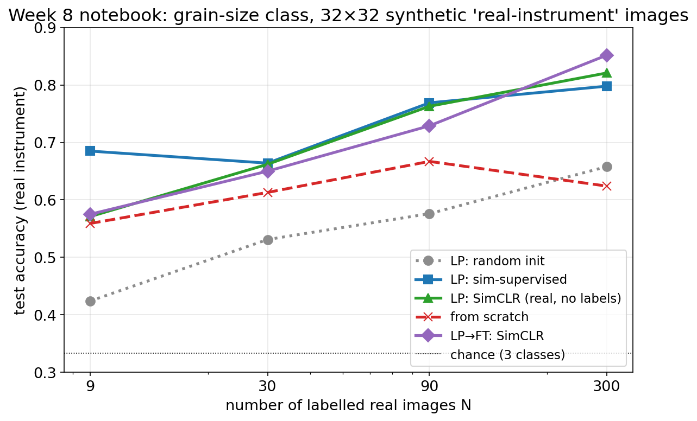
Test accuracy vs number of labelled “real-instrument” images, 3-class grain-size task: linear probes on random-init, sim-supervised and SimCLR backbones, plus LP→FT. From notebooks/week08_embeddings_transfer.ipynb.
Embedding retrieval and diagnostics
- Retrieval: L2-normalise \(\mathbf{h}_n\), rank by cosine similarity, score with precision@k. Notebook, \(k=5\) (chance 0.33): random 0.51 · SimCLR 0.67 · sim-supervised 0.72.
- Uses: find similar micrographs · de-duplicate before splitting · pick diverse images to label · flag OOD frames.
- Diagnose: linear probe vs random-init; inspect neighbours; colour the 2-D map by nuisance (session, detector).
- A pretty 2-D map is not evidence — trust the probe.
Active learning: label the most informative samples
- Seed with 10–20 random labels (cold start).
- Score all unlabelled images by uncertainty.
- Query the most uncertain and diverse ones.
- Retrain, repeat.
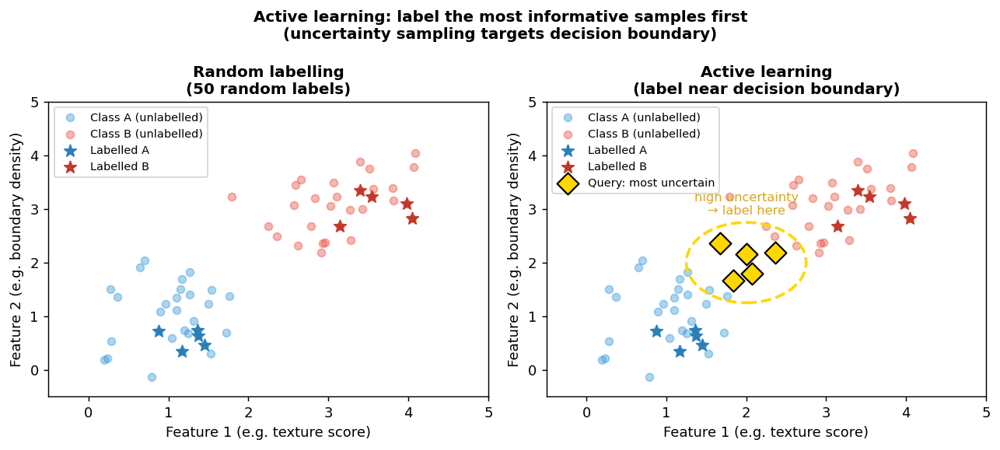
Putting it all together: 30 labelled TEM frames, 5 000 unlabelled
- Split first by specimen/session; de-duplicate with retrieval.
- Backbone: frozen DINOv2 / μSAM encoder, SSL on the 5 000 frames, or synthetic pretraining.
- Diagnose: neighbours, precision@k, nuisance-coloured map; probe vs random init.
- Adapt: linear probe first; LP→FT with differential LRs only if it beats the probe. Augment with the physics gate.
- Spend labels wisely: SAM-assisted annotation + active learning; repeat 3–4.
- Report honestly: held-out specimens, protocol and \(N\) stated.
Self-study notebook
notebooks/week08_embeddings_transfer.ipynb
- Three data roles: labelled simulator, unlabelled “real” pool, few real labels + test set
- Backbone A: supervised on the Voronoi simulator
- Backbone B: SimCLR from scratch — NT-Xent in 6 lines, no zoom
- PCA maps + kNN retrieval, precision@k
- Scratch vs linear probe vs LP→FT for N = 9…300

- CPU only, a few minutes.
- Try: zoom augmentation in SimCLR; naive FT vs LP→FT.
Summary: the week in six points
- Labels, not pixels, are the bottleneck; at \(N\approx 50\) networks memorise shortcuts — grouped validation, split first.
- Augmentation encodes physical invariances; illegal transforms inject label noise or erase the signal.
- Transfer = backbone + new head; differential LRs, gradual unfreezing or LP→FT against catastrophic forgetting.
- Synthetic data transfers when the generator captures the task invariant and spans the nuisance variation.
- SSL pretrains on the unlabelled mountain (SimCLR, MAE, DINO); foundation models (DINOv2, SAM/μSAM) need in-domain adaptation.
- Evaluate embeddings with probe, precision@k and nuisance-coloured maps, against random init.
Must-know for the exam
- \(N\approx 50\) + \(10^7\) parameters overfits; train–val gap, Grad-CAM; split by specimen first, then augment.
- Augmentation legality: justify by physical symmetry; name an illegal case and why.
- Feature extraction vs fine-tuning (labels × domain gap); \(\eta_\text{backbone}\ll\eta_\text{head}\); catastrophic forgetting.
- InfoNCE: positives, negatives, temperature, chance level \(\log(2N-1)\).
- Collapse remedies: negatives (SimCLR), reconstruction (MAE), EMA + centring/sharpening (DINO).
- Linear probe vs LP→FT vs scratch; kNN retrieval with cosine similarity and precision@k.
Next week: unsupervised learning, autoencoders & latent spaces
- Today: representations for a downstream label. Next: structure when there is no label — phases in a spectrum image, patterns in 4D-STEM.
- Clustering: k-means and Gaussian mixtures (EM algorithm).
- Autoencoders & VAEs: the reconstruction family — denoising AEs, ELBO, reparameterisation, rVAE.
- Latent maps and how they mislead: t-SNE/UMAP — today’s “pretty map” warning, made precise.
Continue
Backup slides
Material cut from the lecture path for time — for questions and self-study.
Small data → fast overfitting
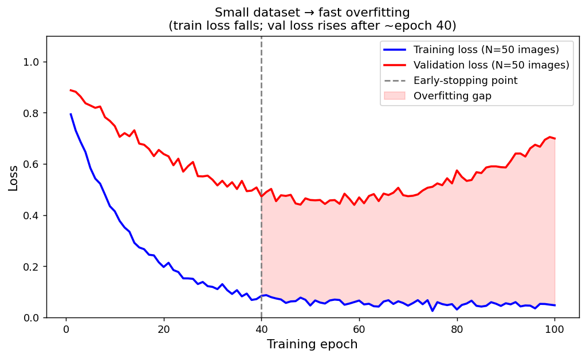
Training and validation loss for a CNN trained from scratch on 50 EM images. Training loss falls monotonically; validation loss starts rising around epoch 40 — the model is memorising the training images, not learning to generalise. The gap is the overfitting region.
On-the-fly augmentation and label consistency
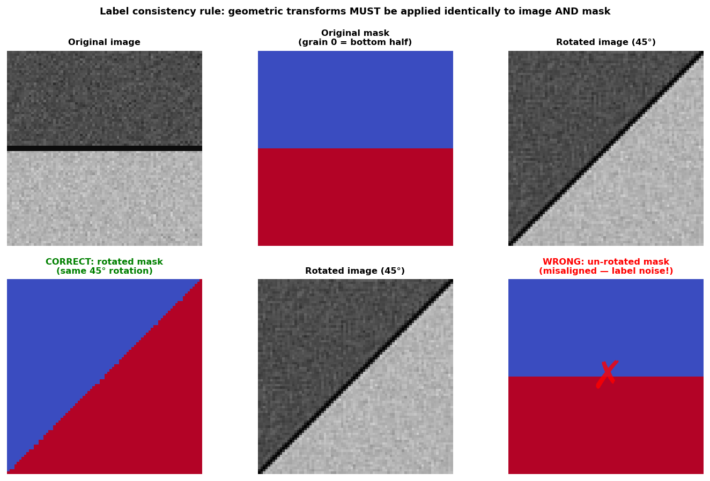
Label consistency: when a grain-boundary image is rotated 45°, the segmentation mask must be rotated by exactly the same 45°. Top row: original image, original mask, rotated image. Bottom row: correct — rotated mask (joint transform); wrong — un-rotated mask paired with the rotated image, producing misaligned ground truth.
The transfer learning recipe: freeze → head → fine-tune
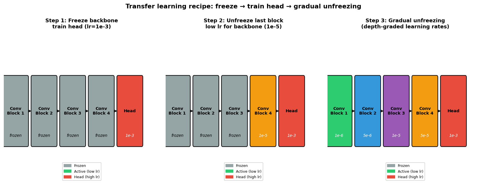
Three-stage transfer learning recipe. Stage 1: all backbone blocks frozen (grey); only the head (red) is trained at lr=1e-3. Stage 2: last backbone block unfrozen (orange) with low lr=1e-5; head continues at 1e-3. Stage 3: gradual unfreezing, depth-graded learning rates — early layers receive the smallest lr, late layers more, head the most.
The sim-to-real gap
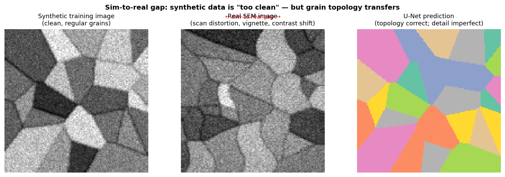
Three panels showing the sim-to-real challenge. Left: synthetic training image (clean, regular grains, no scan artefacts). Centre: real SEM image with scan distortion, vignette, and contrast drift relative to the synthetic distribution. Right: U-Net prediction — grain topology is correctly identified despite the gap, because topology is the task-relevant invariant.
The sim-to-real gap: a failure scenario
- Scenario: a CNN trained on Voronoi images to detect grain triple junctions: 96 % on held-out synthetic data, 61 % on real SEM.
- Differential diagnosis:
- Geometry gap: rolled, elongated real grains vs convex equiaxed Voronoi grains.
- Missing artefacts: charging streaks, contamination spots that look like triple junctions.
- Contrast gap: real grains have sub-grain channelling contrast.
- Synthetic-style shortcut: the model learned Voronoi boundary-width regularities.
- The fix is not “more synthetic data” — add realistic rendering + fine-tune on 10–20 real images.
The complete small-data EM workflow
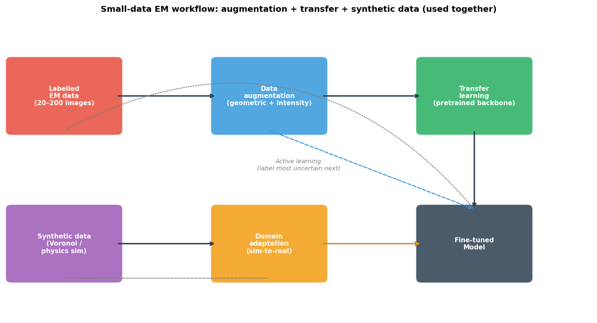
Complete small-data EM workflow diagram. The labelled EM data (20–200 images) feeds augmentation and transfer learning in parallel; synthetic data feeds domain adaptation; all three converge on a fine-tuned model. The active learning loop (dotted arrow, bottom) queries the fine-tuned model for the most uncertain unlabelled images, sends them to expert annotation, and grows the labelled pool.
Validation in the small-data regime
- Group by specimen, not by crop: otherwise the model memorises specimen identity (vignette, brightness baseline, session contrast).
- Protocol:
GroupKFold(n_splits=5).split(X, y, groups=specimen_ids)— the Week 4 lesson. - Augmentation leakage: augmenting before splitting puts rotated copies of training images in the test set. Split first, then augment.
- Honest consequence: grouped splits give lower and noisier numbers — with 5 specimens the test set is 2 specimens. The variance is information.
References

©Philipp Pelz - FAU Erlangen-Nürnberg - Data Science for Electron Microscopy